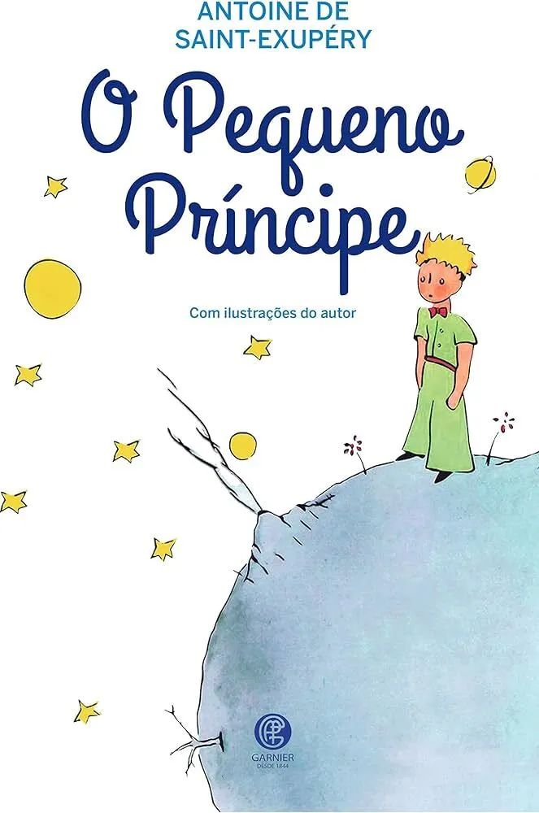

BibliOnLine
Este é o subcabeçalho
Novidades

O Pequeno Principe
A Biblioteca Dos Sonhos Secretos
Herry Potter e a Ordem Da Fenix
Percy Jackson e o Ladrao de Raios
Um Amigo no Escuro
Supere a procrastinação de uma vez por todas
Quem Disse que Eu não Vou Conseguir